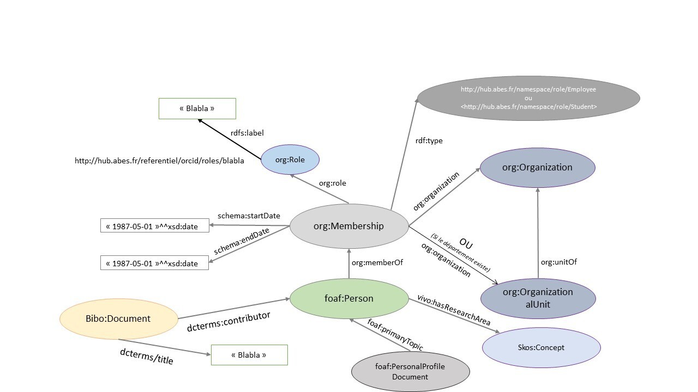

Bienvenue sur idref+
Les données
Dans le triplestore IdRef+, vous trouverez
le corpus ORCID modélisé et converti sous la forme de triplets RDF.
Le corpus
Chaque année, ORCID met à disposition l'ensemble des données publiques des comptes du registre.
Ces données présentent un grand intérêt pour les établissements et acteurs de l'ESR et de l'IST. Or ce volume de données est conséquent et sa manipulation difficile. L'Abes a souhaité rendre plus aisée l'exploration de ce corpus en prenant en charge son ouverture et sa requêtabilité.
Outre la transformation des données opérées par la modélisation elle-même, l'Abes en a profité pour ajouter deux enrichissements :
1. une identification poussée des comptes "français" ;
2. l'alignement de ces comptes avec IdRef.
La modélisation
Pour naviguer et interroger les données, il faut avoir une idée de leur modélisation.
L'Abes a d'abord fait le choix de créer un graphe par compte puis a sélectionné les propriétés les plus intéressantes parmi le schéma de métadonnées des comptes orcid (Ce choix n'est pas gravé dans le marbre et saurait évoluer en fonction des besoins).
Voici, sous forme graphique, les propriétés retenues :

Afin d'assurer un degré élevé d'interopérabilité, cette modélisation reprend la modélisation utilisée traditionnellement à l'Abes dans le cadre du traitement des corpus éditeurs, notamment son triplestore
Scienceplus.
La navigation
A partir de la barre d’action en haut à droite, 3 modalités d’exploration des données sont proposées, d’une technicité progressive :
1. L’encart de recherche en langage naturel et de navigation par rebond de lien en lien
2. Yasgui, l’éditeur de requêtes sparql qui facilite leur rédaction, les mémorise, etc.
3. L’éditeur sparql brut du triplestore
Maintenant à vous de jouer !